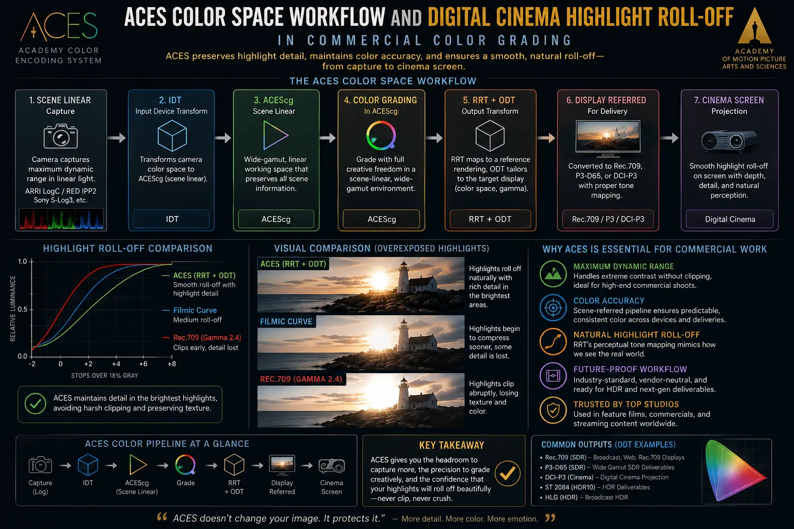
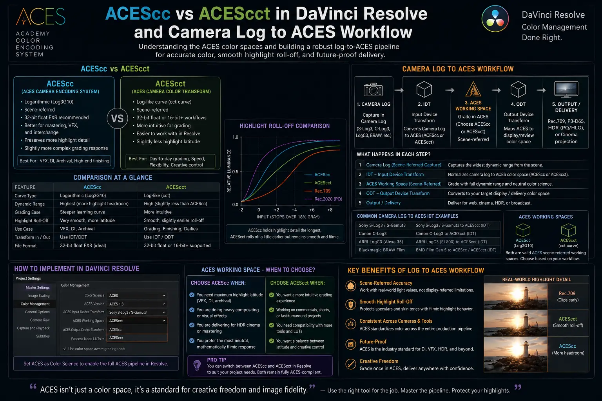

Why Color Grading in Academy Color Encoding System Protects Your Highlight Roll-Off
The Technical Imperative of Scene-Referred Highlight Preservation
In high-end commercial filmmaking and modern brand videography, the distinction between standard digital video and true cinema aesthetics often comes down to how bright highlights decay into clipping. When filming high-contrast scenes—such as golden hour landscapes, bright practical tungsten bulbs inside interior architectural spaces, intense studio rim lights, or metallic automotive reflections—digital sensors capture extraordinary dynamic range. However, traditional legacy post-production pipelines process images inside display-referred color spaces like Rec.709 or sRGB. In these legacy setups, luminance values above 1.0 (or 100% video level) are harshly truncated or standard lookup tables (LUTs) clip channels prematurely, resulting in unpleasant digital artifacts, flat blown-out white patches, and harsh magenta hue shifts in overexposed skin highlights.
To overcome these fundamental limitations, high-end post-production studios have embraced Advanced Commercial Color Grading using the Academy Color Encoding System (ACES). Developed by the Academy of Motion Picture Arts and Sciences (AMPAS) alongside leading color scientists, ACES represents a paradigm shift from traditional display-referred grading to a fully scene-referred, device-independent framework. Adopting an ACES Color Space Workflow allows colorists to process 30+ stops of high-dynamic-range data within a 32-bit floating-point environment. This mathematical precision preserves organic Digital Cinema Highlight Roll-Off, ensuring that specular highlights transition smoothly into pure white without harsh digital clipping or unnatural gamut distortions.
Understanding how ACES safeguards highlight detail is essential for agencies and filmmakers striving to produce broadcast commercial visual quality. Whether evaluating ACEScc vs ACEScct DaVinci Resolve working spaces or configuring an end-to-end camera log to ACES workflow, color management forms the structural bedrock of high-end image processing. By preventing clipped highlight colors and implementing standardized digital cinema color management, modern post-production pipelines ensure that commercial campaigns look breathtaking across all display formats—from high-brightness HDR cinema screens to mobile OLED displays.
Deconstructing the ACES Architecture: From Scene to Display
The core philosophy of ACES rests on decoupling the camera sensor's capture characteristics from the final display device's reproduction limits. In unmanaged video editing workflows, color adjustments are made directly on image data that has already been compressed into a specific display gamut (such as Rec.709 gamma 2.4). When an editor pushes exposure or saturation in a display-referred space, out-of-bounds pixel values collide against the hard ceiling of the color space, causing immediate channel clipping and harsh color clipping artifacts.
An ACES Color Space Workflow solves this by dividing the color pipeline into distinct, standardized transformation modules:
- Input Transform (IDT - Input Device Transform): The IDT takes raw or log video files from a specific camera sensor—such as ARRI LogC4, REDWideGamutRGB/Log3G10, Sony S-Log3, or Canon C-Log2—and translates that camera-native color data into the wide ACES 2065-1 (AP0) reference color space. This step normalizes the footage regardless of which camera recorded it.
- ACES Working Space (AP1 Gamut): Once normalized, color grading takes place within an ACES working color space using the AP1 color primaries (which encompass a gamut significantly larger than Rec.2020). Colorists work in logarithmic encodings such as ACEScc or ACEScct, where color tools react linearly and predictably to exposure wheel tweaks and contrast adjustments.
- Look Modification Transform (LMT): Optional creative grading layers (such as film print emulations or custom brand look profiles) are applied within the working space without permanently altering the underlying high-dynamic-range linear data.
- Output Transform (ODT - Output Device Transform): The final module maps the wide scene-referred ACES data down to the specific target display gamut—whether Rec.709 SDR for television, DCI-P3 for digital cinema projection, or Rec.2020 PQ for Dolby Vision HDR. Crucially, the ODT applies a sophisticated cinematic tone-mapping curve (the RRT or Reference Rendering Transform) that creates a smooth, film-like highlight shoulder automatically.
Because the tone-mapping transformation happens at the very end of the signal chain via the ODT, all underlying exposure and color decisions remain intact in linear float space. If a highlight value reaches 5.0 or 10.0 times above 100% white, the ACES tone-mapping algorithm rolls that extreme energy off in a natural, asymptotic curve. This mathematical approach is vital for preventing clipped highlight colors and maintaining velvety texture in bright cloud formations, studio practical lights, and glowing skin highlights.
Organic Highlight Decay
Mathematical scene-referred tone mapping applies a smooth film-like shoulder to overexposed areas, eliminating harsh digital clipping edges.
Unified Multi-Camera Matching
Camera-specific IDTs map disparate camera sensors into a single wide color space, streamlining commercial colorist setups across mixed camera shoots.
Future-Proof Master Archiving
Projects archived in ACES2065-1 (AP0) retain full sensor dynamic range, allowing future re-rendering for upcoming display technologies without re-grading.
Gamut Compression Protection
Built-in ACES Gamut Compressor tools map highly saturated out-of-gamut practical lights (like stage LEDs) back into legal gamut seamlessly.

ACEScc vs ACEScct in DaVinci Resolve: Selecting the Optimal Working Environment
When setting up commercial colorist setups in Blackmagic Design's DaVinci Resolve Studio, colorists must choose between two primary working color spaces: ACEScc and ACEScct. While both spaces use the wide AP1 color primaries and floating-point precision, their mathematical handling of shadow detail differs significantly, impacting how a colorist interacts with lift, gamma, and gain controls.
Understanding the nuance of ACEScc vs ACEScct DaVinci Resolve enables post-production teams to choose the workflow that best matches their color grading style:
- ACEScc (Pure Log Encoding): Introduced in early versions of ACES, ACEScc uses a pure logarithmic encoding curve across the entire luminance range from deep shadow to extreme highlight. Because the curve is strictly logarithmic, primary color wheels (Lift, Gamma, Gain) operate with absolute mathematical linearity. Raising Gain increases highlight exposure smoothly, while adjusting Lift moves shadow values uniformly. However, because there is no toe curve at the bottom of the luminance spectrum, subtle Lift adjustments can feel overly aggressive or "heavy-handed" when working in deep shadow regions, making it easy to accidentally crush black levels.
- ACEScct (Log Encoding with Toe): Developed in ACES version 1.0.3 to address colorist feedback, ACEScct adds a subtle "toe" curve at the bottom of the log response curve while keeping the midtone and highlight response identical to ACEScc. This toe curve mimics the logarithmic response of traditional motion picture film stock (such as Kodak Vision3). As a result, shadow adjustments feel much smoother and more forgiving. Colorists can manipulate shadow lift and shadow contrast with delicate control, without losing the linear highlight response that protects Digital Cinema Highlight Roll-Off.
For most commercial colorists transitioning from traditional camera log grading, ACEScct is the preferred working space in DaVinci Resolve. It offers the familiar, tactile feedback of film log controls while preserving the full mathematical power of digital cinema color management in highlights and midtones.
Streamlining Multi-Camera Workflows with Camera Log to ACES Pipelines
Modern commercial productions routinely mix multiple camera platforms. A single multi-day commercial shoot might employ an ARRI ALEXA 35 for main A-camera dialogue, a RED V-Raptor for high-speed action shots, a Sony FX6 on a gimbal rig, and compact drone cameras for aerial establishing shots. In traditional unmanaged workflows, matching these four camera feeds requires painstaking manual color adjustments, complex node structures, and custom 3D LUTs that frequently fail under extreme lighting conditions.
Establishing a standardized camera log to ACES workflow eliminates sensor matching friction completely. Because each camera manufacturer provides precise spectral calibration data for their sensors, ACES uses dedicated Input Device Transforms (IDTs) to ingest footage:
- Sensor Alignment: The colorist applies the ARRI LogC4 IDT to ALEXA footage, REDWideGamut/Log3G10 IDT to RED footage, and Sony S-Log3/S-Gamut3.Cine IDT to FX6 footage. Instantly, all three camera sources are translated into the exact same AP1 color space with standardized scene luminance values.
- Unified Primary Color Correction: Because all clips share a common scene-referred baseline, primary exposure corrections, white balance adjustments, and contrast tweaks behave identically across all cameras. An exposure push of +1.5 stops on the Sony FX6 clip produces the exact same color response and tone curve as +1.5 stops on the ARRI clip.
- Consistent Skin Tone Rendering: Skin tone warmth and saturation remain uniform across cutaways. The colorist no longer has to fight camera-specific color casts or differing highlight clipping behavior when cutting back and forth between different angles.
- Simplified Look Application: Creative grading decisions and brand-specific Look Modification Transforms (LMTs) are applied globally across the entire timeline, knowing that every camera angle will render the creative look with identical color fidelity.
This unified approach saves dozens of hours during post-production, allowing colorists to focus on creative storytelling, atmosphere, and visual impact rather than troubleshooting technical sensor discrepancies.
Core ACES Modules
- Input Device Transform (IDT) for camera log normalization.
- AP1 Working Space (ACEScct / ACEScc) for grading.
- Look Modification Transform (LMT) for creative looks.
- Output Device Transform (ODT) for display targeting.
Commercial Colorist Tools
- DaVinci Resolve Studio ACES 1.3 engine.
- ACES Gamut Compressor for LED highlight protection.
- Floating-point 32-bit linear math nodes.
- Calibrated DCI-P3 & Rec.709 mastering monitors.
Master Deliverable Formats
- ACES2065-1 OpenEXR 16-bit half-float master archives.
- Rec.709 Gamma 2.4 SDR commercial TV deliverables.
- Rec.2020 ST.2084 Dolby Vision HDR masters.
- DCI-P3 Digital Cinema Packages (DCP) for theaters.

Solving the LED Out-of-Gamut Problem with ACES Gamut Compression
One of the greatest technical challenges in contemporary Advanced Commercial Color Grading is the widespread use of intense LED lighting fixtures on modern production sets. Vibrant RGB LED panels, neon signage, stage lighting, and car brake lights emit narrow-band monochromatic light. When captured by modern digital camera sensors, these intense single-wavelength light sources often produce negative color values or out-of-gamut colors that overflow traditional color spaces.
In unmanaged post-production environments, out-of-gamut LED lights result in unsightly visual glitches: severe hue clipping, flat "electric" patches of solid magenta or cyan, and harsh posterized rings around light fixtures. To combat this issue, AMPAS introduced the official ACES Gamut Compressor algorithm.
The ACES Gamut Compressor operates within the ACES Color Space Workflow by identifying pixels that fall outside the boundary of the AP1 color gamut. Rather than truncating these extreme color values abruptly, the algorithm compresses out-of-gamut color vectors smoothly back inside the boundary using a subtle distance ratio curve. Bright, highly saturated LED stage lights retain their glowing luminosity while restoring natural color gradients and soft edges around the light source. This ensures that live event videos, music videos, luxury product showcases, and high-fashion commercial spots maintain pristine image structure without ugly color tearing.
Why High-End Brands Choose The PhD Ads for ACES Color Management
Achieving true cinema-grade visual polish requires more than just high-resolution cameras—it demands rigorous color science standards and calibrated post-production pipelines. At The PhD Ads, based in Madurai, we combine creative artistry with cutting-edge digital cinema color management to deliver world-class video production and color grading solutions for brands across India and globally.
Our color grading suites utilize DaVinci Resolve Studio configured with full ACES Color Space Workflows, precise ACEScc vs ACEScct DaVinci Resolve setups, and hardware-calibrated reference monitors. From initial shoot planning and exposure control to camera log to ACES workflow execution and final master delivery, we ensure your commercial assets exhibit smooth Digital Cinema Highlight Roll-Off, rich skin tone fidelity, and future-proof archival quality.
Whether you are producing a national television commercial, a cinematic brand documentary, an ultra-high-definition product reveal, or social media video campaigns, partnering with The PhD Ads guarantees that your visual content commands attention on every screen.
Conclusion
Preserving organic highlight roll-off and rich color depth is essential for creating high-impact, premium commercial videos. By transitioning from display-referred workflows to an ACES Color Space Workflow, post-production teams unlock the full dynamic potential of modern cinema sensors. Leveraging ACEScc vs ACEScct DaVinci Resolve working environments, implementing a seamless camera log to ACES workflow, and preventing clipped highlight colors ensures that every frame displays film-like sophistication.
Ready to elevate your visual storytelling with Advanced Commercial Color Grading and professional digital cinema color management? Contact The PhD Ads today to transform your next commercial video campaign.
Key Topics
Ready to Implement ACES Color Management for Cinematic Commercial Highlights?
At The PhD Ads in Madurai, we leverage advanced ACES color space workflows and professional digital cinema color management to ensure your commercial videos feature smooth highlight roll-off and impeccable brand visuals.
Email: team@e2o.in